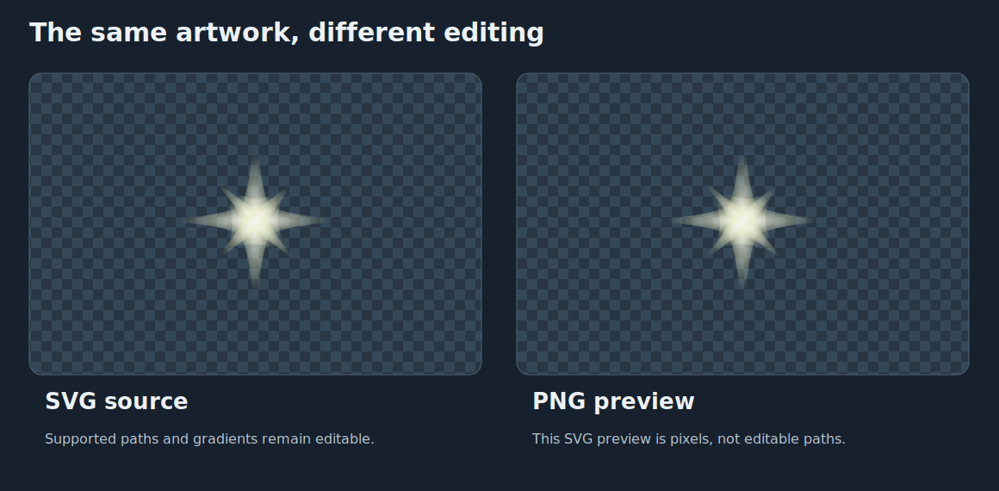

Vector artwork (.SVG)
Choose a chapter
Your first exportChoose a formatCollections and layersExport directivesLayer blend modesAnimation (.OCA)Vector artwork (.SVG)Deliver fontsRetry and troubleshootingPSD/PSB colour and precisionNaming compatibilitySpine naming referencePhotoshop Generator namesOpenEXR channelsSources and creditsKeep supported artwork editable
- Use an orthographic camera and enable Film Transparent.
- Connect the relevant Render Layers Image output to the File Output node. Compositor processing can require rendered pixels.
- Add .SVG. Leave Rasterise Vector Artwork and Flatten Image off for editable content.
- Render, open the SVG, and inspect a path or text object in your editor.
Expected result: supported GP strokes, 2D Curves and Text remain editable. Incompatible content uses raster fallback where supported. A successfully written SVG is not proof of an exact visual match.

When to use rendered pixels
Choose Rasterise Vector Artwork when the exact Blender render matters more than editable paths. Lighting, complex materials, masks and compositor effects may need pixels. Compare gradients, transparency and blends in the receiving editor.
Edit shared artwork once
Supported Blender objects sharing a GP datablock can become linked SVG clones. In Inkscape, use Edit > Clone > Select Original, then edit the shared source. Unlink Clone makes one copy independent. Incompatible geometry, styling or transforms can require separate vectors instead.
Keep text editable
Use a constant Emission material for predictable flat colour. Use Flat Text Colour can export a constant Principled Base Color/Alpha without lighting. Textures and procedural colour may require pixels. Deliver required fonts using FONTS.
When the destination is PSD/PSB
The writer tries supported native shapes, gradients and text before fallback. For incompatible artwork it can retain rendered pixels with an editable SVG source in the adjacent .assets folder. Keep that folder beside the document. Photoshop and PhotoCraft editing/save compatibility must be checked separately.
Modifiers, pressure strokes and GP layer blends
Supported modifiers produce editable evaluated paths, not a live Blender modifier stack. Supported varying-width strokes can use Inkscape PowerStroke plus a portable outline. Other readers may show the outline only. Complex pressure, opacity, brush or lighting combinations can require raster fallback.
GP layer blends and nonlinear colour transforms can differ between Blender and SVG readers. Approximation warnings belong in the conversion log. Use the rendered representation when the difference matters.
SVG names, source IDs and scripting fields
Visible labels keep authored names. Unique element IDs and inert data-asset-* attributes retain source identity where possible. Third-party editors may remove metadata, and automatic round-trip importing is not implemented. SVG event fields such as onclick are scripting hooks; HandOff does not fill them with action scripts.
Detailed writer capability reference
Written describes implementation, not universal visual equivalence or validated editing in every application. Limited requires the feature-specific conditions below. Format support and reader validation remain separate facts in the shared compatibility/vector_features.csv registry. Do not treat the preferred representation as an automatic conversion guarantee.
| Source feature | SVG writer | PSD/PSB writer | Limits |
|---|---|---|---|
| Simple Bézier path | Written | Written | Support describes this exporter; format capability is not writer or target-editor validation. |
| Open or closed paths | Written | Written | Support describes this exporter; format capability is not writer or target-editor validation. |
| Fill and stroke on same geometry | Written | Limited | Current PSD writer separates fill and stroke paints. A single native fill/stroke shape remains to implement and validate. |
| Compound fills and holes | Written | Written | Support describes this exporter; format capability is not writer or target-editor validation. |
| Different internal contour styles | Written | Written | Support describes this exporter; format capability is not writer or target-editor validation. |
| Solid fill | Written | Written | Support describes this exporter; format capability is not writer or target-editor validation. |
| Linear gradient | Written | Limited | Native descriptor subset prototype: RGB linear interpolation, axis-aligned linear/circular radial; automatic publishing gated pending editor validation. |
| Radial gradient | Written | Limited | Native descriptor subset prototype: RGB linear interpolation, axis-aligned linear/circular radial; automatic publishing gated pending editor validation. |
| Angle gradient | not_implemented | not_implemented | Support describes this exporter; format capability is not writer or target-editor validation. |
| Reflected gradient | not_implemented | not_implemented | Support describes this exporter; format capability is not writer or target-editor validation. |
| Diamond gradient | not_implemented | not_implemented | Support describes this exporter; format capability is not writer or target-editor validation. |
| Multiple gradient stops | Written | Limited | Native descriptor subset prototype: RGB linear interpolation, axis-aligned linear/circular radial; automatic publishing gated pending editor validation. |
| Gradient transparency | Written | Limited | Native descriptor subset prototype: RGB linear interpolation, axis-aligned linear/circular radial; automatic publishing gated pending editor validation. |
| Gradient-filled stroke | not_implemented | not_implemented | Support describes this exporter; format capability is not writer or target-editor validation. |
| Gradient clipped to shape | Written | not_implemented | Support describes this exporter; format capability is not writer or target-editor validation. |
| Gradient Overlay effect | not_implemented | not_implemented | Support describes this exporter; format capability is not writer or target-editor validation. |
| Multiple overlapping gradients | Limited | Limited | Support describes this exporter; format capability is not writer or target-editor validation. |
| Gradient transforms | Written | not_implemented | Support describes this exporter; format capability is not writer or target-editor validation. |
| Repeating or reflecting gradients | not_implemented | not_implemented | Support describes this exporter; format capability is not writer or target-editor validation. |
| Gradient colour interpolation | Limited | Limited | Support describes this exporter; format capability is not writer or target-editor validation. |
| SVG mesh gradient | not_implemented | not_implemented | Support describes this exporter; format capability is not writer or target-editor validation. |
| Pattern fill | not_implemented | not_implemented | Support describes this exporter; format capability is not writer or target-editor validation. |
| Uniform stroke width | Written | Written | Support describes this exporter; format capability is not writer or target-editor validation. |
| Variable-width stroke | Limited | Limited | PSD exports fitted editable outlines with preserved centrelines; no native editable width-profile claim. SVG PowerStroke requires a compatible Inkscape reader. |
| Per-point stroke opacity | Limited | Limited | Support describes this exporter; format capability is not writer or target-editor validation. |
| Per-point stroke colour | not_implemented | not_implemented | Support describes this exporter; format capability is not writer or target-editor validation. |
| Separate fill and stroke opacity | Written | Written | Support describes this exporter; format capability is not writer or target-editor validation. |
| Vector clipping | not_implemented | not_implemented | Support describes this exporter; format capability is not writer or target-editor validation. |
| Soft alpha masking | not_implemented | not_implemented | Support describes this exporter; format capability is not writer or target-editor validation. |
| Nested masks | not_implemented | not_implemented | Support describes this exporter; format capability is not writer or target-editor validation. |
| Drop shadow | not_implemented | not_implemented | Support describes this exporter; format capability is not writer or target-editor validation. |
| Inner shadow | not_implemented | not_implemented | Support describes this exporter; format capability is not writer or target-editor validation. |
| Inner/outer glow | not_implemented | not_implemented | Support describes this exporter; format capability is not writer or target-editor validation. |
| Stroke effects | not_implemented | not_implemented | Support describes this exporter; format capability is not writer or target-editor validation. |
| Bevel and emboss | not_implemented | not_implemented | Support describes this exporter; format capability is not writer or target-editor validation. |
| Colour overlay | not_implemented | not_implemented | Support describes this exporter; format capability is not writer or target-editor validation. |
| Pattern overlay | not_implemented | not_implemented | Support describes this exporter; format capability is not writer or target-editor validation. |
| Complex SVG filters | not_implemented | not_implemented | Support describes this exporter; format capability is not writer or target-editor validation. |
| Inkscape Live Path Effects | Limited | Limited | Support describes this exporter; format capability is not writer or target-editor validation. |
| Simple linked SVG clones | Written | not_implemented | Support describes this exporter; format capability is not writer or target-editor validation. |
| Complex linked SVG clones | Limited | not_implemented | Affine-compatible GP geometry and paint share references; unsupported per-instance changes remain independent vectors with source identity. |
| Independent duplicated shapes | Written | Written | Support describes this exporter; format capability is not writer or target-editor validation. |
| External linked assets | not_implemented | Written | Automatic relative SVG source links for unsupported native PSD content, with cached visible previews. Same records for all editors. Reader tests passed; application editing validation remains unverified. |
| Editable text | Limited | Limited | Support describes this exporter; format capability is not writer or target-editor validation. |
| Text along path | not_implemented | not_implemented | Support describes this exporter; format capability is not writer or target-editor validation. |
| Text with custom effects | not_implemented | not_implemented | Support describes this exporter; format capability is not writer or target-editor validation. |
| Text requiring unavailable fonts | Limited | Limited | Support describes this exporter; format capability is not writer or target-editor validation. |
| 2D Blender curves | Written | Written | Support describes this exporter; format capability is not writer or target-editor validation. |
| Grease Pencil flat fills | Written | Written | Support describes this exporter; format capability is not writer or target-editor validation. |
| Grease Pencil lighting | not_implemented | not_implemented | Support describes this exporter; format capability is not writer or target-editor validation. |
| Evaluated curve modifiers | Limited | Limited | Support describes this exporter; format capability is not writer or target-editor validation. |
| Linked GP object instances | Written | not_implemented | Support describes this exporter; format capability is not writer or target-editor validation. |
| Raster image | Written | Written | Support describes this exporter; format capability is not writer or target-editor validation. |
| Mixed vector/raster artwork | Written | Written | Support describes this exporter; format capability is not writer or target-editor validation. |
| Multiply blend | Written | Written | Support describes this exporter; format capability is not writer or target-editor validation. |
| Screen blend | Written | Written | Support describes this exporter; format capability is not writer or target-editor validation. |
| Add / Linear Dodge | Limited | Written | Support describes this exporter; format capability is not writer or target-editor validation. |
| Other blend modes | Limited | Written | Support describes this exporter; format capability is not writer or target-editor validation. |
| Animated transform | not_implemented | not_implemented | Support describes this exporter; format capability is not writer or target-editor validation. |
| Animated geometry | not_implemented | not_implemented | Support describes this exporter; format capability is not writer or target-editor validation. |
| Bones/IK/FK/weights | not_implemented | not_implemented | Support describes this exporter; format capability is not writer or target-editor validation. |
| Unsupported vector feature | not_implemented | not_implemented | Support describes this exporter; format capability is not writer or target-editor validation. |